Open source · Apache-2.0 · runs in your GCP or AWS account
Spot machines for coding agents. Cheap, safe, and in your own cloud.
Runlease launches spot VMs, the capacity clouds sell at 60 to 90% below the normal price, inside your own account. Your keys never leave your machine, the relay in the middle cannot read a byte, and every machine deletes itself when its lease ends.
- account
- yours
- class
- compute.small · spot
- keys held by the relay
- none
- managed by
- itself
- rate
- ~$0.026 / h
- cost so far
- $0.020
$ runlease up --ttl 2h
Example lease, shown as a time-lapse. Press snooze to buy it an hour.
Built by Marshal: AI coding agents at full speed, with full receipts.
marshal.codes →Thirty seconds
Watch a machine get leased, used and gone.
The terminal is on the left. On the right is what each command builds: where the keys are made, what the relay holds, where the machine runs, and what is left when the lease ends.

Why it exists
An agent needs a real machine. It should be cheap, it should be yours, and it should not live forever.
Spot prices, on your bill
Spot capacity costs 60 to 90% less than on-demand. You pay your cloud directly, at your own rates, with nothing added. The hourly price and the cost of the whole lease are shown before launch.
Keys never leave you
SSH keys are made on your machine and stay there. The VM has no public address and its SSH server listens on localhost only: it dials out. The relay in the middle holds no key and sees only ciphertext.
In your own cloud
Machines run in your GCP or AWS account, in your network, under your IAM and your audit logs. No machine of yours ever lives in an account of ours.
Nothing to run
No control plane and no scheduler. The lease logic is written into each machine at boot, and the machine deletes itself on time.
What it is for
Give your agents cheap, safe machines to do their work.
Anything an agent, a CI job or you would do on a real Linux box. Each one runs on a spot machine in your own cloud account, is reached over SSH end to end, and deletes itself when its lease ends.
A machine for every agent
Each agent gets its own box to build, test and break things on. Your laptop, your keys and your other agents are not in the room.
$ runlease up -n agent-7 --ttl 2h -d $ runlease exec agent-7 -- make test
Run what you would not run on your laptop
Generated code, an unfamiliar repository, an install script from the internet. It runs on a machine that holds none of your SSH keys and is gone within the hour.
$ runlease up -n sandbox --ttl 1h -d $ runlease push sandbox ./run.sh /tmp/run.sh $ runlease exec sandbox -- bash /tmp/run.sh
Borrow a big machine for one build
A full test suite, a large compile, a data crunch. Rent sixteen cores at spot prices for the twenty minutes you need them, and pay for nothing after.
$ runlease up -n build -s compute.2xlarge -d $ runlease exec build -- make -j16 test
Fan out, then let them all end
One machine per test shard or per task. There is no cleanup step to write, because every machine carries its own deadline. The free relay allows two at a time; on your own relay you set the limit.
$ for i in 1 2; do runlease up -n shard-$i --ttl 1h -d done $ runlease list
A GPU for an afternoon
One spot GPU for an evaluation or a fine-tune, on a lease, so it cannot be left running overnight by mistake.
$ runlease up -p gcp -s compute.gpu --ttl 3h $ runlease snooze 1h # need longer
Show a branch running
Run the app on the machine and open it on your own localhost. It is reached through the tunnel, not through an open port.
$ runlease forward demo -L 3000:localhost:3000 # now open http://localhost:3000
Starter files for these: example manifests.
Security
Your keys stay on your machine. The relay only ever touches the outside of the tunnel.
You are about to give an agent a shell on a cloud machine. This is exactly who can see and do what.
Who holds what
Read down the highlighted column. The relay is the only shared, internet-facing part, and it ends up holding almost nothing.
| Secret | Your machine | The relay | Your VM | The network |
|---|---|---|---|---|
| Login private keyProves you to the VM | – | – | ||
| VM host private keyProves the VM to you | – | – | ||
| Session contentsCommands, files, forwarded traffic | ciphertext | ciphertext | ||
| Cloud credentialsWhat launches and deletes VMs | – | only what you attach | – | |
| Slot tokenMatches your connections to your VM | hidden by TLS | |||
| Who you areThe email you signed in with | – | hidden by TLS |
holds it public half only– never sees it
Now assume the relay is compromised
It is designed to be worth as little as possible to whoever breaks into it. Here is what they get.
It can
- Refuse or drop your connections
- See connection metadata: who, from where, when, how much
- Open a TCP connection to your VM's sshd, and fail to log in
- Serve a different agent binary, which the VM then rejects
It cannot
- Read or change your commands, files or forwarded traffic
- Pretend to be your VM. The host key was fixed before boot
- Log in. It never holds a key, and passwords are off
- Run code on the VM, or reach anything in your cloud account
The relay is one attacker. The threat model goes through four more: a stolen token, the network, read access to your cloud project, and hostile code on the VM itself. It also lists the limits we know about.
No trust on first use
The CLI issues the VM's host key before the VM exists and pins it on every connection.
cmd/runlease/exec.go · FixedHostKeyVerified agent
The boot script checks the agent's SHA-256 against the one compiled into the CLI, then runs it.
pkg/userdata/userdata.goUnprivileged by default
The agent runs with no capabilities. sudo on the VM is locked unless the manifest opts in.
pkg/userdata/userdata.goRelay fails closed
It will not start without authentication, validates every token and caps its slots.
pkg/relay/server.goHardened sshd
Bound to localhost. Public key only, one allowed user, no root login. The boot script checks what sshd enforces and stops if it differs.
pkg/userdata/userdata.goSigned releases
Checksums signed with Sigstore, build provenance for every binary, actions pinned by commit.
.github/workflows/release-please.ymlNothing to manage
There is no control plane. Each machine carries its own ending.
Most ways of running throwaway machines need something that stays up to track them and clean them up. Runlease has no such thing. The whole lifecycle is written into the machine when it boots.
A server that tracks your machinesA scheduler or cron job that reaps themA database of what is runningA laptop that has to stay online
- Its own timerArmed first at boot, before anything that can fail.
- Its own off switchA script on the machine deletes it through your cloud's own API. Nothing outside has to ask.
- Its own extension
runlease snoozemoves the timer from your side. That is all the management there is.
Close the laptop, lose the network, or let the agent that asked for the machine crash. The machine still ends on time. How leases work.
How it works
Three small programs, and one of them is deliberately kept in the dark.
Step through a launch. Watch where the keys are, and where they are not. The full walkthrough covers the protocol and what happens inside the VM.
Usage
One binary. A handful of verbs.
- Built to be driven by an agentJSON output on every command, and exec, push, pull and forward that never prompt.
- Portable sizescompute.small to compute.2xlarge and compute.gpu map to the right type on each cloud.
- Many sessions, one tunnelHold a port forward open in one terminal and run exec, push and pull from others.
- Bring your own relayOne static binary behind TLS. Or use no relay and connect directly, through IAP, or through SSM.
# a spot VM in your account, deleted in two hours $ runlease up --provider gcp --size compute.large --ttl 2h # see what is running $ runlease list # need longer? move the timer $ runlease snooze agent-box 1h # done early $ runlease down agent-box --yes
# run a command $ runlease exec agent-box -- make test # reach a port on the VM from localhost $ runlease forward agent-box -L 8080:localhost:8080 # move files over the same channel $ runlease push agent-box ./build.tar /tmp/build.tar $ runlease pull agent-box /var/log/app.log ./app.log # or just open a shell $ runlease connect agent-box
# agent-box.yaml name: agent-box provider: gcp region: us-central1-a instanceClass: compute.large reclaim: ttl: 3h selfTermination: true relay: addr: wss://relay.example.com setup: - name: toolchain run: apt-get update && apt-get install -y build-essential git $ runlease up -m agent-box.yaml --attach
# machine-readable output $ runlease up -m agent-box.yaml --detach --output json $ runlease list --output json # no TTY, no prompts $ runlease exec agent-box -- ./run-tests.sh $ runlease down agent-box --yes # and if the agent forgets to clean up, # the lease does it anyway
The relay
Start on ours for free. Move to your own whenever you like.
The relay is the one piece that needs a public address. Use the shared one with a Google sign-in, or run the same binary yourself. Either way it never holds your keys.
Public relay
Sign in with Google and launch. No card, no setup.
- machines at once
- 2
- connected for up to
- 8 h
- sign-in
- price
- free
$ runlease config set relay.addr \ wss://connect.runlease.online $ runlease login
No uptime promise. What it allows and what it logs
Self-hosted relay
One small binary on one small VM, in your network, admitting only who you say.
- machines at once
- yours to set
- who can sign in
- your domain
- connection metadata
- stays with you
- price
- one small VM
Self-hosting guide, with a Terraform module
Larger tiers
More machines at once on the public relay, for teams that would rather not run one. Not available yet.
- machines at once
- more
- status
- planned
Until then, your own relay has no limits but yours.
These limits are on the relay only. The machines run in your cloud account, on your bill, and Runlease does not meter them.
Open source
Read it. Run it. Add your cloud.
Runlease is Apache-2.0, about ten thousand lines of Go, with no service of ours in the path unless you choose one.
A cloud provider is four methods. GCP and AWS are done. Azure, Hetzner and DigitalOcean are open, and a provider is a good first contribution.
// pkg/provider/interface.go type CloudProvider interface { RequestSpot(ctx, spec) (*InstanceHandle, error) Terminate(ctx, id) error Status(ctx, id) (InstanceStatus, error) WaitUntilRunning(ctx, id) (*InstanceHandle, error) }